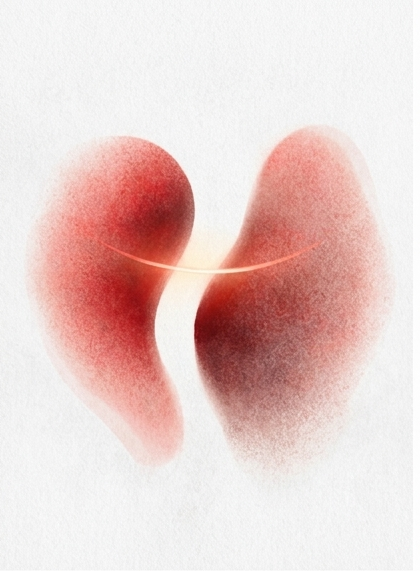
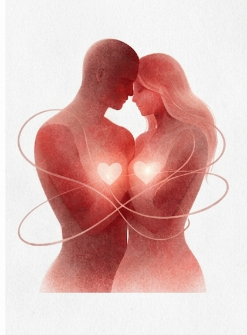
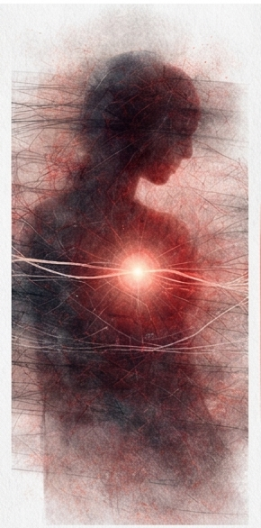
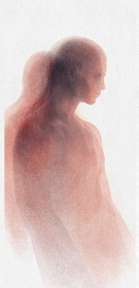
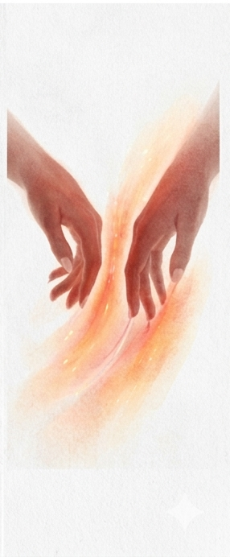
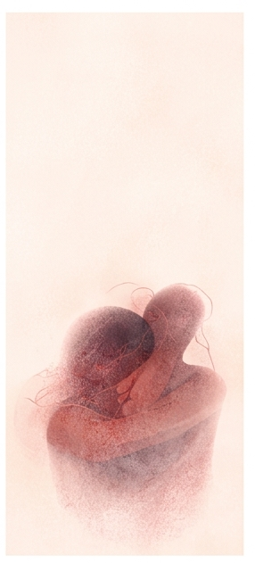

"Latidos" es una serie de ilustraciones que explora el amor en sus distintas fases: el encuentro, la conexión, la ruptura, la memoria y el desapego.


01 — Primer latido
No te conozco,
pero algo en mí
ya te reconoce.
No es tu voz,
ni tu forma,
ni tu nombre.
Es ese instante
en el que el tiempo
titubea
y el pecho responde
antes que la mente.
Ahí empieza todo.

02 — Sincronía
Aprendimos
a respirar en el mismo ritmo,
a callar
sin sentir silencio,
a existir
sin preguntarnos por qué.
Dos cuerpos,
una sola pausa
entre latido y latido.

03 — Ruido blanco
Hablamos,
pero las palabras
no llegan.
Se quedan suspendidas
en algún lugar
entre tu miedo
y el mío.
Y el amor,
que antes era música,
ahora
solo suena a fondo.

04 — Eco
Te fuiste,
pero no del todo.
Quedaste en las paredes,
en los gestos,
en la forma en que
miro el mundo.
Eres un sonido
que ya no está,
pero sigue ocurriendo.

05 — Memoria táctil
Aún recuerdo
cómo encajaban
tus manos en las mías.
No tu cara,
no tu voz.
Solo ese mapa
invisible
que dejamos
en la piel del otro.

06 — "Después de todo"
Y aun así,
queda algo.
No es amor
como antes,
no es fuego,
ni vértigo.
Es una calma extraña,
una forma de seguir
sin romperse.
Porque amar
también era esto:
aprender
a soltar.